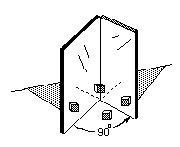
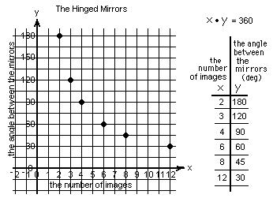
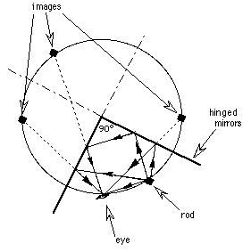

The graph of an hyperbola from hinged mirrors
Tape 2 mirrors together as in the diagram below. Put a small object (like a white Cuisenaire rod) between the mirrors. Change the angle between the mirrors and keep track of the number of images you see.


If one does a light ray diagram of the mirrors at say 90', the images (3 + the original= 4) all lie on one circle whose center is at the hinge, with a radius from the hinge to the small object.

Back to Patterns in Graphs
Back to Patterns in Mathematics
To order
Don's materials
Mathman home